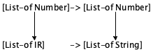
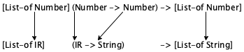
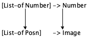
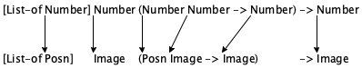
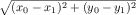

III Абстракция
Многие из наших определений данных и определений функций выглядят одинаково. Например, определение списка String(строк) отличается от определения списка Number(чисел) только в двух местах: названиях классов данных и словах “String” и “Number.”. Точно так же функция, которая ищет конкретную строку в списке String(строк), почти неотличима от функции, которая ищет конкретное число в списке Number(чисел).
Опыт показывает, что подобные сходства проблематичны. Сходство происходит потому, что программисты - физически или мысленно - копируют код. Когда программисты сталкиваются с проблемой, которая примерно похожа на другую, они копируют решение и модифицируют новую копию, чтобы решить новую проблему. Вы обнаружите такое поведение как в «реальном» контексте программирования, так и в мире электронных таблиц и математического моделирования. Однако копирование кода означает, что программисты копируют ошибки, и одно и то же исправление, возможно, придется применить ко многим копиям. Это также означает, что при пересмотре или расширении определения базовых данных все копии кода должны быть найдены и изменены соответствующим образом. Этот процесс дорогостоящий и подвержен ошибкам, что требует ненужных затрат для команд программистов.
Хорошие программисты стараются устранить сходство настолько, насколько позволяет язык программирования. . Программа похожа на сочинение. Первая версия - это черновик, и черновики требуют редактирования. «Устранение» подразумевает, что программисты записывают свои первые наброски программ, выявляют сходства (и другие проблемы) и избавляются от них. На последнем этапе они либо абстрагируются( abstract), либо используют существующие (абстрактные) функции. Часто требуется несколько итераций этого процесса, чтобы привести программу в удовлетворительную форму.
В первой половине этой части показано, как абстрагироваться от сходства функций и определений данных. Программисты также называют результат этого процесса абстракцией(abstraction), объединяя имя процесса и его результат. Вторая половина касается использования существующих абстракций и новых языковых элементов для облегчения этого процесса. Хотя примеры в этой части взяты из области списков, идеи применимы повсеместно.
14 Сходства везде
Если вы решили (некоторые из) упражнений в произвольно больших данных, вы знаете, что многие решения выглядят одинаково. Фактически, сходство может побудить вас скопировать решение одной проблемы, чтобы создать решение для следующей. Но ты не должен красть код, даже свой собственный. Вместо этого вы должны абстрагироваться(abstract) от похожих фрагментов кода, и эта глава научит вас абстрагироваться.
Наши способы избежать сходства относятся к “Intermediate Student Language”(языку промежуточного студента) или сокращенно ISL. В DrRacket выберите “Intermediate Student” в подменю “How to Design Programs” в меню “Language”. Почти все другие языки программирования предоставляют аналогичные средства; в объектно-ориентированных языках вы можете найти дополнительные механизмы абстракции. Тем не менее, эти механизмы имеют общие основные характеристики, изложенные в этой главе, и поэтому идеи разработки, описанные здесь, применимы и в других контекстах.
14.1 Сходства в функциях
Рецепт разработки определяет базовую организацию функции, потому что шаблон создается из определения данных безотносительно цели функции. Поэтому неудивительно, что функции, использующие одни и те же данные, выглядят одинаково.
; Los -> Boolean ; does l contain "dog" (define (contains-dog? l) (cond [(empty? l) #false] [else (or (string=? (first l) "dog") (contains-dog? (rest l)))]))
; Los -> Boolean ; does l contain "cat" (define (contains-cat? l) (cond [(empty? l) #false] [else (or (string=? (first l) "cat") (contains-cat? (rest l)))])) Рисунок 86: Две похожие функции
; String Los -> Boolean ; determines whether l contains the string s (define (contains? s l) (cond [(empty? l) #false] [else (or (string=? (first l) s) (contains? s (rest l)))]))
; Los -> Boolean ; does l contain "dog" (define (contains-dog? l) (contains? "dog" l))
; Los -> Boolean ; does l contain "cat" (define (contains-cat? l) (contains? "cat" l)) Рисунок 87: Еще раз о двух похожих функциях
То, что вы Ученые-информатики заимствуют термин «абстракция» из математики. Здесь «6» - абстрактное понятие, потому что оно представляет все способы перечисления шести вещей. Напротив, «6 дюймов» или «6 яиц» - это конкретное использование. только что увидели, называется абстракцией или, точнее, функциональной абстракцией. Абстрагирование различных версий функций - это один из способов устранения сходства программ, и, как вы увидите, устранение сходства упрощает сохранение программы в неизменном виде в течение длительного периода.
Упражнение 235. Используйте функцию contains? для определения функций, которые ищут class="RktVal">"atom", "basic", и "zoo", соответственно.
; Lon -> Lon ; adds 1 to each item on l (define (add1* l) (cond [(empty? l) '()] [else (cons (add1 (first l)) (add1* (rest l)))]))
; Lon -> Lon ; adds 5 to each item on l (define (plus5 l) (cond [(empty? l) '()] [else (cons (+ (first l) 5) (plus5 (rest l)))]))
14.2 Различные сходства
Абстракция выглядит легко в случае с функциями contains-dog? и contains-cat?. Требуется только сравнение двух определений функций, замена литеральной строки параметром функции и быстрая проверка того, что старые функции легко определить с помощью абстрактной функции. Такая абстракция настолько естественна, что без лишних слов проявилась в двух предыдущих частях книги.
В этом разделе показано, как тот же принцип дает мощную форму абстракции. Взгляните на рисунок 88. Обе функции используют список чисел и порог. Левая выводит список всех тех чисел, которые ниже порога, а та, что справа, производит все те, которые выше порога.
; Lon Number -> Lon ; select those numbers on l ; that are below t (define (small l t) (cond [(empty? l) '()] [else (cond [(< (first l) t) (cons (first l) (small (rest l) t))] [else (small (rest l) t)])]))
; Lon Number -> Lon ; select those numbers on l ; that are above t (define (large l t) (cond [(empty? l) '()] [else (cond [(> (first l) t) (cons (first l) (large (rest l) t))] [else (large (rest l) t)])])) Рисунок 88: Еще две похожие функции
Эти две функции отличаются только одним местом: оператором сравнения, который определяет, должно ли число из данного списка быть частью результата или нет. Функция слева использует <, а правая >. В остальном две функции выглядят одинаково, не считая имени функции.
Давайте рассмотрим первый пример и абстрагируемся от двух функций с дополнительным параметром. На этот раз дополнительный параметр представляет собой оператор сравнения, а не строку:
(define (extract R l t) (cond [(empty? l) '()] [else (cond [(R (first l) t) (cons (first l) (extract R (rest l) t))] [else (extract R (rest l) t)])]))
Стоп! Здесь вы должны спросить, имеет ли смысл это определение. Без лишних хлопот мы создали функцию, которая использует функцию - этого, вы, вероятно, раньше не видели. Если вы изучали математику, вы уже знакомы с дифференциальным оператором и неопределенным интегралом. Обе эти функции потребляют и производят функции. Но мы не предполагаем, что вы прошли курс математического анализа. Однако оказывается, что ваш простой маленький обучающий язык ISL поддерживает эти виды функций, и что определение таких функций является одним из самых мощных инструментов хороших программистов - даже на языках, на которых функции, потребляющие функции, кажутся недоступными.
(check-expect (extract < '() 5) (small '() 5)) (check-expect (extract < '(3) 5) (small '(3) 5)) (check-expect (extract < '(1 6 4) 5) (small '(1 6 4) 5))
; Lon Number -> Lon (define (small-1 l t) (extract < l t))
; Lon Number -> Lon (define (large-1 l t) (extract > l t))
; Number Number -> Boolean ; is the area of a square with side x larger than c (define (squared>? x c) (> (* x x) c))
(extract squared>? (list 3 4 5) 10)
Упражнение 237. Вычислите (squared>? 3 10) и (squared>? 4 10) в DrRacket. Как насчет 5 10)?
До сих пор вы видели, что определения абстрактных функций могут быть более полезными, чем исходные функции. Например, contains? полезнее чем contains-dog? и contains-cat?, а extract полезнее, чем small и large. Эти преимущества абстракции доступны на всех уровнях программирования: текстовые документы, электронные таблицы, небольшие приложения и крупные промышленные проекты. Создание абстракций для последних стимулирует исследования языков программирования и программной инженерии. Еще одним важным аспектом абстракции является то, что теперь у вас есть единая точка контроля над всеми этими функциями. Если выясняется, что абстрактная функция содержит ошибку, достаточно исправить ее определение, чтобы исправить все остальные определения. Точно так же, если вы выясните, как ускорить вычисления абстрактной функции или как уменьшить ее потребление энергии, тогда все функции, определенные в терминах этой функции, будут улучшены без каких-либо дополнительных усилий. Следующие упражнения показывают, как работают эти улучшения единой точки управления.
; Nelon -> Number ; determines the smallest ; number on l (define (inf l) (cond [(empty? (rest l)) (first l)] [else (if (< (first l) (inf (rest l))) (first l) (inf (rest l)))]))
; Nelon -> Number ; determines the largest ; number on l (define (sup l) (cond [(empty? (rest l)) (first l)] [else (if (> (first l) (sup (rest l))) (first l) (sup (rest l)))])) Рисунок 89: Поиск inf и sup в списке чисел
Упражнение 238. Объедините две функции на рисунке 89 в одну функцию. Обе используют непустые списки чисел (Nelon) и производят одно число. Левый выводит наименьшее число в списке, а правый - наибольшее.
(list 25 24 23 22 21 20 19 18 17 16 15 14 13 12 11 10 9 8 7 6 5 4 3 2 1) (list 1 2 3 4 5 6 7 8 9 10 11 12 13 14 15 16 17 18 19 20 21 22 23 24 25)
Измените исходные функции, используя max, который выбирает большее из двух чисел, и min, которое выбирает меньшее. Затем снова абстрагируйтесь, определите inf-2 и sup-2 и снова протестируйте их с теми же входными данными. Почему эти версии намного быстрее?
Другой ответ на эти вопросы см. В разделе Локальные определения.
14.3 Сходства в определениях данных
; An Lon (List-of-numbers) ; is one of: ; – '() ; – (cons Number Lon)
; An Los (List-of-String) ; is one of: ; – '() ; – (cons String Los)
-
Когда мы пишем [List-of Number], мы говорим, что ITEM представляет все числа, поэтому это просто другое имя для List-of-numbers;
-
Точно так же [List-of String] определяет тот же класс данных, что и List-of-String; а также
-
Если бы мы определили класс инвентаризационных записей (inventory records), например:
(define-struct IR [name price]) ; An IR is a structure: ; (make-IR String Number)
(define-struct point [hori veri])
; A Pair-boolean-string is a structure: ; (make-point Boolean String) ; A Pair-number-image is a structure: ; (make-point Number Image)
Чтобы создать экземпляр определения данных с двумя параметрами, вам понадобятся два имени коллекций данных. Используя Number и Image для параметров CP, вы получаете [CP Number Image], который описывает наборы point, которые объединяют число с изображением. Напротив, [CP Boolean String] объединяет логические значения со строками в структуре point.
; An LStr is one of: ; – String ; – (make-layer LStr)
; An LNum is one of: ; – Number ; – (make-layer LNum)
(define-struct layer [stuff])
Упражнение 241. Сравните определения для NEList-of-temperatures и NEList-of-Booleans. Затем сформулируйте абстрактное определение данных NEList-of.
; String [List-of String] -> [Maybe [List-of String]] ; returns the remainder of los starting with s ; #false otherwise (check-expect (occurs "a" (list "b" "a" "d" "e")) (list "d" "e")) (check-expect (occurs "a" (list "b" "c" "d")) #f) (define (occurs s los) los)
14.4 Функции - это Значения
Функции в этой части расширяют наше понимание вычисления(оценки) программ. Легко понять, почему функции потребляют больше, чем числа, например строки или изображения. Структуры и списки - это немного натянуто, но в конечном итоге это конечные «вещи». Однако функции, потребляющие много функций, выглядят странно. Действительно, сама идея нарушает первое интермеццо двумя способами: (1) имена примитивов и функций используются в качестве аргументов в приложениях, и (2) параметры используются в позициях функций приложений.
Изложение проблемы покажет вам, чем грамматика ISL отличается от грамматики BSL. Во-первых, наш язык выражений должен включать в определение имен функций и примитивных операций. Во-вторых, первая позиция в приложении должна позволять вещи, отличные от имен функций и примитивных операций; как минимум, она должна разрешать переменные и параметры функций.
Кажется, что изменения грамматики требуют изменения правил вычисления, но все, что меняется, - это набор значений. В частности, чтобы использовать функции в качестве аргументов функций, самое простое изменение - сказать, что функции и примитивные операции являются значениями.
(define (f x) x)
Упражнение 245. Разработайте функцию function=at-1.2-3-and-5.775?. Для двух функций от чисел к числам функция определяет, дают ли они одинаковые результаты для 1.2, 3 и -5.775.
Математики говорят, что две функции равны, если они вычисляют один и тот же результат при одинаковых входных данных - для всех возможных входов.
Можем ли мы надеяться определить function=?, которая определяет, равны ли две функции от чисел к числам? Если да, определите функцию. Если нет, объясните почему и подумайте о том, что вы столкнулись с первой легко определяемой идеей, для которой вы не можете определить функцию.
14.5 Вычисления с функциями
Переход с BSL+ на ISL позволяет использовать функции в качестве аргументов и использовать имена в первой позиции применения(application). DrRacket работает с именами в этих позициях, как и везде, но, естественно, в результате он ожидает функции. Удивительно, но простой адаптации законов алгебры достаточно для вычисления программ на ISL.
(extract < '() 5) == '()
== (cond [(empty? '()) '()] [else (cond [(< (first '()) t) (cons (first '()) (extract < (rest '()) 5))] [else (extract < (rest '()) 5)])]) == (cond [#true '()] [else (cond [(< (first '()) t) (cons (first '()) (extract < (rest '()) 5))] [else (extract < (rest '()) 5)])]) == '()
(extract < (cons 4 '()) 5) == (cond [(empty? (cons 4 '())) '()] [else (cond [(< (first (cons 4 '())) 5) (cons (first (cons 4 '())) (extract < (rest (cons 4 '())) 5))] [else (extract < (rest (cons 4 '())) 5)])])
(cond [(empty? (cons 4 '())) '()] [else (cond [(< (first (cons 4 '())) 5) (cons (first (cons 4 '())) (extract < (rest (cons 4 '())) 5))] [else (extract < (rest (cons 4 '())) 5)])]) == (cond [#false '()] [else (cond [(< (first (cons 4 '())) 5) (cons (first (cons 4 '())) (extract < (rest (cons 4 '())) 5))] [else (extract < (rest (cons 4 '())) 5)])]) == (cond [(< (first (cons 4 '())) 5) (cons (first (cons 4 '())) (extract < (rest (cons 4 '())) 5))] [else (extract < (rest (cons 4 '())) 5)]) == (cond [(< 4 5) (cons (first (cons 4 '())) (extract < (rest (cons 4 '())) 5))] [else (extract < (rest (cons 4 '())) 5)])
== (cond [#true (cons (first (cons 4 '())) (extract < (rest (cons 4 '())) 5))] [else (extract < (rest (cons 4 '())) 5)]) == (cons 4 (extract < (rest (cons 4 '())) 5)) == (cons 4 (extract < '() 5)) == (cons 4 '())
(extract < (cons 6 (cons 4 '())) 5) == (extract < (cons 4 '()) 5) == (cons 4 (extract < '() 5)) == (cons 4 '())
Упражнение 247. Вычислите (extract < (cons 8 (cons 4 '())) 5) с помощью пошагового исполнителя DrRacket’s.
Упражнение 248. Вычислите (squared>? 3 10) and (squared>? 4 10) в пошаговом исполнителе DrRacket.
> (extract squared>? (list 3 4 5) 10) (list 4 5)
(extract squared>? (list 3 4 5) 10)
(1)
== (cond [(empty? (list 3 4 5)) '()] [else (cond [(squared>? (first (list 3 4 5)) 10) (cons (first (list 3 4 5)) (extract squared>? (rest (list 3 4 5)) 10))] [else (extract squared>? (rest (list 3 4 5)) 10)])])
(2)
== ... == (cond [(squared>? 3 10) (cons (first (list 3 4 5)) (extract squared>? (rest (list 3 4 5)) 10))] [else (extract squared>? (rest (list 3 4 5)) 10)])
(3)
15 Разработка/проектирование абстракций
По сути, абстрагироваться - значит превращать что-то конкретное в параметр. У нас это несколько раз было в предыдущем разделе. Чтобы абстрагироваться от аналогичных определений функций, вы добавляете параметры, которые заменяют конкретные значения в определении. Чтобы абстрагироваться от аналогичных определений данных, вы создаете параметрические определения данных. Когда вы столкнетесь с другими языками программирования, вы увидите, что их механизмы абстракции также требуют введения параметров, хотя они могут не быть параметрами функций.
15.1 Абстракции из примеров
Когда вы впервые научились складывать, вы работали с конкретными примерами. Вероятно, родители научили вас складывать два маленьких числа пальцами. Позже вы узнали, как складывать два произвольных числа; вы познакомились с вашим первым видом абстракции. Еще намного позже вы научились формулировать выражения, которые переводят температуру из градусов Цельсия в градусы Фаренгейта или вычисляют расстояние, которое автомобиль проезжает с заданной скоростью и за определенное время. Короче говоря, вы перешли от очень конкретных примеров к абстрактным отношениям.
; List-of-numbers -> List-of-numbers ; converts a list of Celsius ; temperatures to Fahrenheit (define (cf* l) (cond [(empty? l) '()] [else (cons (C2F (first l)) (cf* (rest l)))]))
; Inventory -> List-of-strings ; extracts the names of ; toys from an inventory (define (names i) (cond [(empty? i) '()] [else (cons (IR-name (first i)) (names (rest i)))]))
; Number -> Number ; converts one Celsius ; temperature to Fahrenheit (define (C2F c) (+ (* 9/5 c) 32))
(define-struct IR [name price]) ; An IR is a structure: ; (make-IR String Number) ; An Inventory is one of: ; – '() ; – (cons IR Inventory) Рисунок 90: Пара похожих функций
(define (cf* l g) (cond [(empty? l) '()] [else (cons (g (first l)) (cf* (rest l) g))]))
(define (names i g) (cond [(empty? i) '()] [else (cons (g (first i)) (names (rest i) g))]))
(define (map1 k g) (cond [(empty? k) '()] [else (cons (g (first k)) (map1 (rest k) g))]))
(define (map1 k g) (cond [(empty? k) '()] [else (cons (g (first k)) (map1 (rest k) g))])) Рисунок 91: Те же две аналогичные функции, абстрагированные
В этом разделе представлен рецепт разработки для создания абстракций из примеров. Как показывает предыдущий раздел, создавать абстракции легко. Мы оставляем сложную часть для следующего раздела, где мы покажем вам, как находить и использовать существующие абстракции.
-
Шаг 1 - сравнить два элемента на предмет сходства.
Когда вы найдете два определения функций, которые почти одинаковы, за исключением их имен и некоторых значений Рецепт требует существенной модификации, чтобы абстрагироваться от не значений. в аналогичных местах, сравните их и отметьте различия. Если два определения различаются более чем в одном месте, соедините соответствующие различия линией.
На рисунке 90 показана пара похожих определений функций. Эти две функции применяют функцию к каждому элементу в списке. Они различаются только тем, какую функцию они применяют к каждому элементу. Два основных момента подчеркивают это существенное различие. Также они отличаются двумя несущественными способами: названиями функций и названиями параметров.
-
Далее мы абстрагируемся. Абстрагирование(abstract) означает замену содержимого соответствующих выделений кода новыми именами и добавление этих имен в список параметров. Для нашего рабочего примера мы получаем следующую пару функций после замены отличий на g; см. рисунок 91. Это первое изменение устраняет существенную разницу. Теперь каждая функция просматривает список и применяет некоторую заданную функцию к каждому элементу.
Несущественные различия - названия функций, а иногда и названия некоторых параметров - легко устранить. Действительно, если вы изучали DrRacket, то знаете, что синтаксис проверки позволяет делать это систематически и легко; см. нижнюю часть рисунка 91. Мы решили использовать map1 для имени функции и k для имени параметра списка. Независимо от того, какие имена вы выберете, результатом будут два идентичных определения функций.
Наш пример прост. Во многих случаях вы обнаружите, что существует больше, чем одна пара различий. Главное - найти пары отличий. Когда вы отметите различия с бумагой и карандашом, соедините связанные прямоугольники линией. Затем введите по одному дополнительному параметру в каждой строке. И не забудьте изменить все рекурсивные способы использования функции, чтобы дополнительные параметры пошли в ход.
-
Теперь мы должны проверить, что новая функция является правильной абстракцией исходной пары функций. Подтвердить означает проверить, что здесь означает определение двух исходных функций в терминах абстракции.
Таким образом, предположим, что одна исходная функция называется f-original-исходной и использует один аргумент, а абстрактная функция называется abstract. Если f-original отличается от другой конкретной функции использованием одного значения, скажем val, следующее определение функции(define (f-from-abstract x) (abstract x val)) вводит функцию f-from-abstract, которая должна быть эквивалентна f-original. То есть (f-from-abstract V) должно давать тот же ответ, что и (f-original V) для каждого надлежащего значения V. В частности, она должна выполняться для всех значений, используемых вашми тестами для тестирования f-original. Итак, переформулируйте и повторно запустите эти тесты для f-from-abstract и убедитесь, что они успешны.; List-of-numbers -> List-of-numbers (define (cf*-from-map1 l) (map1 l C2F)) ; Inventory -> List-of-strings (define (names-from-map1 i) (map1 i IR-name)) Полный пример будет включать в себя несколько тестов, и поэтому мы можем предположить, что и cf*, и names идут с некоторыми тестами:(check-expect (cf* (list 100 0 -40)) (list 212 32 -40)) (check-expect (names (list (make-IR "doll" 21.0) (make-IR "bear" 13.0))) (list "doll" "bear")) Чтобы гарантировать, что функции, определенные в терминах map1, работают правильно, вы можете скопировать тесты и соответствующим образом изменить имена функций:(check-expect (cf*-from-map1 (list 100 0 -40)) (list 212 32 -40)) (check-expect (names-from-map1 (list (make-IR "doll" 21.0) (make-IR "bear" 13.0))) (list "doll" "bear")) -
Новой абстракции нужна сигнатура, потому что, как объясняет Использование абстракций, повторное использование абстракций начинается с их сигнатур. Найти полезные сигнатуры - серьезная проблема. Сейчас мы используем текущий пример, чтобы проиллюстрировать сложность; Сходство в сигнатурах решает проблему.
Рассмотрим проблему сигнатуры map1. С одной стороны, если вы рассматриваете map1 как абстракцию cf*, вы можете подумать, что это; List-of-numbers [Number -> Number] -> List-of-numbers
это то есть исходная сигнатура, расширенная одной частью для функций:Поскольку дополнительный параметр для map1 - это функция, использование сигнатуры функции для ее описания не должно вас удивлять. Эта сигнатура функции также довольно проста; это “name”(имя) для всех функций выполняющих преобразование из числа в число. Здесь такой функцией является C2F, а также add1, sin и imag-part.С другой стороны, если вы рассматриваете map1 как абстракцию names, сигнатура будет совершенно другой:; Inventory [IR -> String] -> List-of-strings
На этот раз дополнительным параметром является IR-name, которое представляет собой функцию-селектор, которая потребляет IR и создает строки(String). Но очевидно, что эта вторая сигнатура будет бесполезна в первом случае, и наоборот. Чтобы учесть оба случая, сигнатура для map1 должна выражать совпадение Number, IR и String.Также, это касается сигнатур, вы, вероятно, уже хотите использовать List-of. Ясно, что легче написать [List-of IR], чем подробно описать определение данных для Inventory. Так что да, на данный момент мы используем List-of, когда речь идет о списках, и вы тоже должны это делать..
; List-of-numbers -> List-of-numbers (define (add1-to-each l) (map1 l add1))
; Number -> [List-of Number] ; tabulates sin between n ; and 0 (incl.) in a list (define (tab-sin n) (cond [(= n 0) (list (sin 0))] [else (cons (sin n) (tab-sin (sub1 n)))]))
; Number -> [List-of Number] ; tabulates sqrt between n ; and 0 (incl.) in a list (define (tab-sqrt n) (cond [(= n 0) (list (sqrt 0))] [else (cons (sqrt n) (tab-sqrt (sub1 n)))])) Рисунок 92: Аналогичные функции для упражнения 250
; [List-of Number] -> Number ; computes the sum of ; the numbers on l (define (sum l) (cond [(empty? l) 0] [else (+ (first l) (sum (rest l)))]))
; [List-of Number] -> Number ; computes the product of ; the numbers on l (define (product l) (cond [(empty? l) 1] [else (* (first l) (product (rest l)))])) Рисунок 93: Аналогичные функции для упражнения 251
Упражнение 250. Разработайте tabulate, которая является абстракцией двух функций, показанных на рисунке 92. Если tabulate правильно разработана, используйте ее для определения функций sqr и tan.
Упражнение 251. Создайте fold1, которая представляет собой абстракцию двух функций на рисунке 93.
Упражнение 252. Разработайте fold2, которая является абстракцией двух функций на рис. 94. Сравните это упражнение с упражнением 251. Несмотря на то, что оба связаны с функцией product, это упражнение создает дополнительную проблему, поскольку вторая функция, image*, использует список Posns и создает Image(изображение). Тем не менее, решение находится в пределах досягаемости материала в этом разделе, и особенно стоит сравнить его с решением из предыдущего упражнения. Сравнение дает интересную информацию об абстрактных сигнатурах.
; [List-of Number] -> Number (define (product l) (cond [(empty? l) 1] [else (* (first l) (product (rest l)))]))
; [List-of Posn] -> Image (define (image* l) (cond [(empty? l) emt] [else (place-dot (first l) (image* (rest l)))])) ; Posn Image -> Image (define (place-dot p img) (place-image dot (posn-x p) (posn-y p) img)) ; graphical constants: (define emt (empty-scene 100 100)) (define dot (circle 3 "solid" "red")) Рисунок 94: Аналогичные функции к упражнению 252
Наконец, когда вы имеете дело с определениями данных, процесс абстракции происходит аналогичным образом. Дополнительные параметры к определениям данных представляют собой наборы значений, а тестирование означает составление определения данных для некоторых конкретных примеров. В общем, абстрагирование по определениям данных, как правило, проще, чем абстрагирование по функциям, и поэтому мы оставляем вам возможность соответствующим образом адаптировать рецепт разработки.
15.2 Сходства в сигнатурах
Оказывается, сигнатура функции является ключом к ее повторному использованию. Следовательно, вы должны научиться формулировать сигнатуры, описывающие тезисы в наиболее общих терминах. Чтобы понять, как это работает, мы начнем с повторного взгляда на сигнатуры и с простого - хотя, возможно, поразительного - понимания того, что сигнатуры в основном являются определениями данных.
В общем, обозначение сигнатур стрелками похоже на обозначение List-of из сходства в определениях данных. Последнее использует (имя) одного класса данных, скажем X, и описывает все списки X элементов, не присваивая ему имя. Обозначение стрелки использует произвольное количество классов данных и описывает коллекции функций.
Это означает, что рецепт разработки абстракции применим и к сигнатурам. Вы сравниваете похожие сигнатуры; вы подчеркиваете различия; а затем вы заменяете их параметрами. Но процесс абстрагирования сигнатур кажется более сложным, чем процесс для функций, отчасти потому, что сигнатуры уже являются абстрактными частями рецепта проектирования, а отчасти потому, что нотация на основе стрелок намного сложнее, чем все остальное, с чем мы сталкивались.


Поскольку перечисление параметров сигнатуры - это дополнительная работа, для наших целей мы просто говорим, что с этого момента все переменные в сигнатуре являются параметрами. Другие языки программирования, однако, настаивают на явном перечислении параметров сигнатур, но взамен вы можете сформулировать дополнительные ограничения в таких сигнатурах, и сигнатуры проверяются перед запуском программы.
-
обе сигнатуры описывают функции с одним аргументом; а также
-
в обоих описаниях аргументов используется конструкция List-of.

(define (pr* l bs jn) (cond [(empty? l) bs] [else (jn (first l) (pr* (rest l) bs jn))]))
(define (im* l bs jn) (cond [(empty? l) bs] [else (jn (first l) (im* (rest l) bs jn))]))

; [X Y] [List-of X] Y [X Y -> Y] -> Y
-
Учитывая два похожих определения функций, f и g, сравните их сигнатуры на предмет сходства и различий. Цель состоит в том, чтобы обнаружить организацию сигнатуры и отметить места, где одна сигнатура отличается от другой. Соединяйте различия парами, как вы это делаете, когда анализируете тела функций.
-
Преобразуйте f и g в f-abs и g-abs. То есть добавьте параметры, устраняющие различия между f и g. Создавайте сигнатуры для f-abs и g-abs. Помните, что изначально означали новые параметры; это поможет вам определить новые части сигнатур.
-
Проверьте, распространяется ли анализ на шаге 1 на сигнатуры f-abs и g-abs. Если да, замените различия переменными, которые охватывают классы данных. Если две сигнатуры совпадают, у вас есть сигнатура для абстрактной функции.
-
Протестируйте абстрактную сигнатуру. Во-первых, убедитесь, что подходящие замены переменных в абстрактной сигнатуре дают сигнатуры f-abs и g-abs. Во-вторых, убедитесь, что обобщенная сигнатура синхронизирована с кодом. Например, если p - новый параметр и его сигнатура это
; ... [A B -> C] ...
тогда p всегда нужно применять к двум аргументам, первый из A, а второй из B. И результатом применения p будет C, и его следует использовать там, где ожидаются элементы C.
; [Number -> Boolean] ; [Boolean String -> Boolean] ; [Number Number Number -> Number] ; [Number -> [List-of Number]] ; [[List-of Number] -> Boolean]
-
sort-n, которая использует список чисел и функцию, которая использует два числа (из списка) и производит логическое значение( Boolean); sort-n создает отсортированный список чисел.
-
sort-s, которая использует список строк и функцию, которая использует две строки (из списка) и производит логическое значение( Boolean); sort-s создает отсортированный список строк.
-
map-n, которая использует список чисел и функцию от чисел к числам для создания списка чисел..
-
map-s, которая использует список строк и функцию от строк к строкам и создает список строк.
15.3 Единая точка контроля
В общем, программы похожи на черновики бумаг. Редактирование черновиков важно для исправления опечаток, исправления грамматических ошибок, обеспечения единообразия документа и исключения повторов. Никто не хочет читать статьи, которые много повторяются, и никто не хочет читать такие программы.
Устранение сходства в пользу абстракций имеет много преимуществ. Создание абстракции упрощает определения. Это также может выявить проблемы с существующими функциями, особенно когда они не совсем похожи. Но самым важным преимуществом является создание единой точки контроля(управления) некоторыми общими функциональностями.
Размещение определения некоторых функций в одном месте упрощает обслуживание программы. Когда вы обнаруживаете ошибку, вам нужно найти только одно место, чтобы исправить ее. Когда вы обнаружите, что код должен иметь дело с другой формой данных, вы можете добавить код только в одно место. Когда вы обнаруживаете улучшение, одно изменение улучшает все возможности использования функциональности. Если вы сделали копии функций или кода в целом, вам нужно было бы найти все копии и исправить их; в противном случае ошибка может сохраниться или только одна из функций будет работать быстрее.
Сформируйте абстракцию вместо того, чтобы копировать и изменять какой-либо код.
Наш рецепт разработки абстрагирования функций - это самый простой инструмент для создания абстракций. Чтобы использовать его, нужна практика. По мере практики вы расширяете свои способности читать, систематизировать и поддерживать программы. Лучшие программисты - это те, кто активно редактирует свои программы для создания новых абстракций, чтобы собирать вещи, связанные с задачей, в одной точке. Здесь мы используем функциональную абстракцию для изучения этой практики; в других курсах по программированию вы встретите другие формы абстракции, в первую очередь наследование(inheritance) в объектно-ориентированных языках, основанных на классах.
15.4 Абстракции из шаблонов
В первых двух главах этой части представлено множество функций, основанных на одном и том же шаблоне. В конце концов, рецепт проектирования говорит об организации функций вокруг организации (основных) определений входных данных . Поэтому не удивительно, что многие определения функций похожи друг на друга.
(define (fun-for-l l) (cond [(empty? l) ...] [else (... (first l) ... ... (fun-for-l (rest l)) ...)]))
; [X Y] [List-of X] Y [X Y -> Y] -> Y (define (reduce l base combine) (cond [(empty? l) base] [else (combine (first l) (reduce (rest l) base combine))]))
; [List-of Number] -> Number (define (sum lon) (reduce lon 0 +))
; [List-of Number] -> Number (define (product lon) (reduce lon 1 *))
16 Использование Абстракций
Если у вас есть абстракции, вы можете использовать их когда это возможно. Они создают единые точки контроля и являются средством экономии труда. Точнее, использование абстракции помогает читателям вашего кода понять ваши намерения. Если абстракция хорошо известна и встроена в язык или поставляется со стандартными библиотеками, она более четко сигнализирует о том, чдо делает ваша функция, чем специально разработанный код.
Эта глава полностью посвящена повторному использованию существующих абстракций ISL. Она начинается с раздела о существующих абстракциях ISL, некоторые из которых вы видели под вымышленными именами. Остальные разделы посвящены повторному использованию таких абстракций. Одним из ключевых ингредиентов является новая синтаксическая конструкция, local, для определения функций и переменных (и даже структурных типов) локально внутри функции. Вспомогательный инградиент(компонент), представленный в последнем разделе - это lambda конструкция для создания безыменных функций; lambda это удобство, но несущественное для идеи повторного использования абстрактных функций.
; [X] N [N -> X] -> [List-of X] ; constructs a list by applying f to 0, 1, ..., (sub1 n) ; (build-list n f) == (list (f 0) ... (f (- n 1))) (define (build-list n f) ...) ; [X] [X -> Boolean] [List-of X] -> [List-of X] ; produces a list from those items on lx for which p holds (define (filter p lx) ...) ; [X] [List-of X] [X X -> Boolean] -> [List-of X] ; produces a version of lx that is sorted according to cmp (define (sort lx cmp) ...) ; [X Y] [X -> Y] [List-of X] -> [List-of Y] ; constructs a list by applying f to each item on lx ; (map f (list x-1 ... x-n)) == (list (f x-1) ... (f x-n)) (define (map f lx) ...) ; [X] [X -> Boolean] [List-of X] -> Boolean ; determines whether p holds for every item on lx ; (andmap p (list x-1 ... x-n)) == (and (p x-1) ... (p x-n)) (define (andmap p lx) ...) ; [X] [X -> Boolean] [List-of X] -> Boolean ; determines whether p holds for at least one item on lx ; (ormap p (list x-1 ... x-n)) == (or (p x-1) ... (p x-n)) (define (ormap p lx) ...) Рисунок 95: Абстрактные функции ISL для обработки списков (1)
16.1 Существующие абстракции
> (build-list 3 add1) (list 1 2 3)
> (filter odd? (list 1 2 3 4 5)) (list 1 3 5)
> (sort (list 3 2 1 4 5) >) (list 5 4 3 2 1)
> (map add1 (list 1 2 2 3 3 3)) (list 2 3 3 4 4 4)
; [X Y] [X Y -> Y] Y [List-of X] -> Y ; applies f from right to left to each item in lx and b ; (foldr f b (list x-1 ... x-n)) == (f x-1 ... (f x-n b)) (define (foldr f b lx) ...) (foldr + 0 '(1 2 3 4 5)) == (+ 1 (+ 2 (+ 3 (+ 4 (+ 5 0))))) == (+ 1 (+ 2 (+ 3 (+ 4 5)))) == (+ 1 (+ 2 (+ 3 9))) == (+ 1 (+ 2 12)) == (+ 1 14) ; [X Y] [X Y -> Y] Y [List-of X] -> Y ; applies f from left to right to each item in lx and b ; (foldl f b (list x-1 ... x-n)) == (f x-n ... (f x-1 b)) (define (foldl f b lx) ...) (foldl + 0 '(1 2 3 4 5)) == (+ 5 (+ 4 (+ 3 (+ 2 (+ 1 0))))) == (+ 5 (+ 4 (+ 3 (+ 2 1)))) == (+ 5 (+ 4 (+ 3 3))) == (+ 5 (+ 4 6)) == (+ 5 10) Рисунок 96: Абстрактные функции ISL для обработки списков (2)
Две функции на рисунке 96, foldr и foldl, чрезвычайно мощные. Обе сводят/reduce списки к значениям. Примеры вычислений объясняют абстрактные примеры в заголовках с foldr и foldl с помощью пременения функции +, 0, и коротким списком. Как вы можете видеть Математика назвает функции ассоциативными, если порядок не имеет значения. ISL’s = ассоциативен для целых чисел, но не с неточными(inexacts). См. ниже. foldr обрабатывает значения списка справа на лево и foldl слева на право. Хотя для некоторых функций направление не имеет значения, в целом это не верно.
; [X] [X -> Number] [NEList-of X] -> X ; finds the (first) item in lx that maximizes f ; if (argmax f (list x-1 ... x-n)) == x-i, ; then (>= (f x-i) (f x-1)), (>= (f x-i) (f x-2)), ... (define (argmax f lx) ...)
(define-struct address [first-name last-name street]) ; An Addr is a structure: ; (make-address String String String) ; interpretation associates an address with a person's name ; [List-of Addr] -> String ; creates a string from first names, ; sorted in alphabetical order, ; separated and surrounded by blank spaces (define (listing l) (foldr string-append-with-space " " (sort (map address-first-name l) string<?))) ; String String -> String ; appends two strings, prefixes with " " (define (string-append-with-space s t) (string-append " " s t)) (define ex0 (list (make-address "Robert" "Findler" "South") (make-address "Matthew" "Flatt" "Canyon") (make-address "Shriram" "Krishna" "Yellow"))) (check-expect (listing ex0) " Matthew Robert Shriram ") Рисунок 97: Создание программы с абстракциями
-
той, которая извлекает имена из заданного списка Addr;
-
той, которая сортирует эти имена в алфавитном порядке; и
-
той, которая объединяет строки из шага 2.
(map address-first-name l)
; [X Y] [X Y -> Y] Y [List-of X] -> Y ; f*oldl works just like foldl (check-expect (f*oldl cons '() '(a b c)) (foldl cons '() '(a b c))) (check-expect (f*oldl / 1 '(6 3 2)) (foldl / 1 '(6 3 2))) (define (f*oldl f e l) (foldr f e (reverse l)))
Разработайте build-l*st, которая работает так же, как build-list. Подсказка Вспомните функцию add-at-end из упражнения 193. Примечание к Разработке Аккумуляторы охватывают концепции, необходимые для разработки этих функций с нуля.
16.2 Локальные Определения
Давайте еще раз посмотрим на Рисунок 97. Функция string-append-with-space явно играет второстепенную роль и не имеет смысла вне этого узкого контекста. Кроме того, организация тела функции не отражает трех указанных выше задач.
Почти все языки программирования поддерживают тот или иной способ обозначения таких отношений как части программы. Идея называется локальное определение, также называемая приватным(частным) определением. В ISL, выражения local вводят локальныеe определения функций, переменных и структурных типов.
; [List-of Addr] -> String ; creates a string of first names, ; sorted in alphabetical order, ; separated and surrounded by blank spaces (define (listing.v2 l) (local (; 1. extract names (define names (map address-first-name l)) ; 2. sort the names (define sorted (sort names string<?)) ; 3. append them, add spaces ; String String -> String ; appends two strings, prefix with " " (define (helper s t) (string-append " " s t)) (define concat+spaces (foldr helper " " sorted))) concat+spaces)) Рисунок 98: Организация функции с использованием local
На рисунке 98 показан вариант рисунка 97 с использованием local. Тело функции listing.v2 теперь является local выражением, которое состоит из двух частей: последовательности определений и выражения тела. Последовательность локальных определений выглядит точно так же, как последовательность в области определений DrRacket.
В этом примере последовательность определений состоит из четырех частей: трех определений констант и одного определения функции. Каждое определение константы представляет собой одну из трех задач планирования. Определение функции - это переименованная версия Поскольку имена видны только внутри выражения local, можно сократить имя. string-append-with-space; она используется с foldr для реализации третьей задачи. Тело local - это всего лишь название третьей задачи.
Используйте local для переформулирования глубоко вложенных выражений. Используйте хорошо подобранные имена, чтобы выразить то, что вычисляют выражения.
... (local ((define names ...) (define sorted ...) (define concat+spaces (local (; String String -> String (define (helper s t) (string-append " " s t))) (foldr helper " " sorted)))) concat+spaces) ...
Хотите ли вы выразить отношения между частями программы с такой точностью, зависит от двух ограничений: языка программирования и ожидаемой продолжительности жизни кода. Некоторые языки даже не могут выразить идею о том, что helper(помощник) полезен только для третьего шага. С другой стороны, вам необходимо сбалансировать время, необходимое для создания программы, и ожидание того, что вам или кому-то понадобится вернуться к ней и снова понять код. Команда Racket предпочитает ошибаться на стороне будущих разработчиков, потому что члены команды знают, что ни одна программа никогда не будет завершена и все программы нужно будет исправлять. Конец
; [List-of Number] [Number Number -> Boolean] ; -> [List-of Number] ; produces a version of alon0, sorted according to cmp (define (sort-cmp alon0 cmp) (local (; [List-of Number] -> [List-of Number] ; produces the sorted version of alon (define (isort alon) (cond [(empty? alon) '()] [else (insert (first alon) (isort (rest alon)))])) ; Number [List-of Number] -> [List-of Number] ; inserts n into the sorted list of numbers alon (define (insert n alon) (cond [(empty? alon) (cons n '())] [else (if (cmp n (first alon)) (cons n alon) (cons (first alon) (insert n (rest alon))))]))) (isort alon0))) Рисунок 99: Организация определений взаимосвязанных функций с помощью local
На рисунке 99 представлен второй пример. Организация этого определения функции информирует читателя о том, что sort-cmp вызывает две вспомогательные функции: isort и insert. По местонахождению становится очевидным, что прилагательное “sorted”(отсортировано) в предназначении insert относится к isort. Другими словами, insert (вставка) полезна только в этом контексте; программист не должен пытаться использовать её где-нибудь вне контекста. Хотя это ограничение уже важно в исходном определении функции sort-cmp, выражение local выражает его как часть программы.
Другой важный аспект этой реорганизации определения sort-cmp касается видимости cmp, второго параметра функции. Локально определенные функции могут ссылаться на cmp, потому что она определена в контексте определений. Не передавая cmp от isort к insert (или обратно), читатель может сразу сделать вывод, что cmp остается неизменным на протяжении всего процесса сортировки.
Упражнение 258. Используйте выражение local для организации функций рисования многоугольника на рисунке 73. Если глобально определенная функция широко используется, не делайте ее локальной.
Упражнение 259. Используйте выражение local, чтобы организовать функции перестановки слов из Игры в слова - Суть проблемы.
; Nelon -> Number ; determines the smallest number on l (define (inf.v2 l) (cond [(empty? (rest l)) (first l)] [else (local ((define smallest-in-rest (inf.v2 (rest l)))) (if (< (first l) smallest-in-rest) (first l) smallest-in-rest))])) Рисунок 100: Использование local может улучшить производительность
(inf (rest l))
На рисунке 100 показана измененная версия. Здесь выражение local появляется в середине выражения cond. Оно определяет константу, значение которой является результатом естественной рекурсии. Теперь напомним, что при вычислении выражения local определения вычисляются один раз перед переходом к телу, то есть (inf (rest l)) вычисляется один раз, в то время как тело выражения local ссылается на результат дважды. Таким образом, local сохраняет от повторного вычисления (inf (rest l)) на каждом этапе вычисления.
Упражнение 260. Подтвердите понимание эффективности inf.v2, повторив эксперимент с производительностью из упражнения 238.
; Inventory -> Inventory ; creates an Inventory from an-inv for all ; those items that cost less than a dollar (define (extract1 an-inv) (cond [(empty? an-inv) '()] [else (cond [(<= (IR-price (first an-inv)) 1.0) (cons (first an-inv) (extract1 (rest an-inv)))] [else (extract1 (rest an-inv))])])) Рисунок 101: Функция инвентаризации, см. Упражнение 261
Упражнение 261. Рассмотрим определение функции на рисунке 101. Оба предложения во вложенном выражении cond извлекают первый элемент из an-inv и оба вычисляют (extract1 (rest an-inv)). Используйте local для названия этого выражения. Помогает ли это увеличить скорость, с которой функция вычисляет свой результат? Существенно? Немного? Нисколько?
16.3 Локальные определения добавляют выразительности(выразительной мощи)
Третий и последний пример показывает, как local добавляет выразительность BSL и BSL+. Конечные автоматы представляют разработку программного мира, моделирующего, как конечный автомат распознает последовательности нажатий клавиш. В то время как анализ данных естественным образом приводит к определениям данных на рисунке 82, попытка разработать основную функцию программного мира терпит неудачу. В частности, даже если данный конечный автомат остается неизменным в ходе моделирования, состояние мира должно включать его, чтобы программа могла переходить из одного состояния в другое, когда игрок нажимает клавишу.
; FSM FSM-State -> FSM-State ; matches the keys pressed by a player with the given FSM (define (simulate fsm s0) (local (; State of the World: FSM-State ; FSM-State KeyEvent -> FSM-State (define (find-next-state s key-event) (find fsm s))) (big-bang s0 [to-draw state-as-colored-square] [on-key find-next-state]))) ; FSM-State -> Image ; renders current state as colored square (define (state-as-colored-square s) (square 100 "solid" s)) ; FSM FSM-State -> FSM-State ; finds the current state's successor in fsm (define (find transitions current) (cond [(empty? transitions) (error "not found")] [else (local ((define s (first transitions))) (if (state=? (transition-current s) current) (transition-next s) (find (rest transitions) current)))])) Рисунок 102: Мощность из локальных определений функций
На рисунке 102 показано решение проблемы с помощью ISL. Оно использует определения local(локальных) функций и, таким образом, может приравнять состояние мира к текущему состоянию конечного автомата. В частности, simulate local определяет обработчик клавиатурного события, который использует только текущее состояние мира, и событие KeyEvent, которое представляет нажатие клавиши игроком. Поскольку эта локально определенная функция может ссылаться на заданный конечный автомат fsm, можно найти следующее состояние в таблице переходов, даже если таблица переходов не является аргументом этой функции.
Как показано на рисунке, все остальные функции определяются параллельно с основной функцией. Сюда входит функция find, которая выполняет фактический поиск в таблице переходов. Ключевым улучшением по сравнению с BSL является то, что локально определенная функция может ссылаться как на параметры функции, так и на глобально определенные вспомогательные функции.
Короче говоря, эта программная организация сигнализирует будущему читателю именно те идеи, которые находит на этапе анализа данных рецепта разработки программных миров. Во-первых, данное представление конечного автомата остается неизменным. Во-вторых, в ходе моделирования изменяется текущее состояние конечного автомата.
Урок состоит в том, что выбранный язык программирования влияет на способность программиста выражать решения, а также на способность будущего читателя распознавать идеи проектирования первоначального создателя.
> (identityM 1) (list (list 1))
> (identityM 3) (list (list 1 0 0) (list 0 1 0) (list 0 0 1))
16.4 Вычисления с local
(define (simulate fsm s0) (local ((define (find-next-state s key-event) (find fsm s))) (big-bang s0 [to-draw state-as-colored-square] [on-key find-next-state])))
(simulate AN-FSM A-STATE)
== (local ((define (find-next-state s key-event) (find AN-FSM s))) (big-bang A-STATE [to-draw state-as-colored-square] [on-key find-next-state]))
== (local ((define (find-next-state-1 s key-event) (find AN-FSM a-state))) (big-bang A-STATE [to-draw state-as-colored-square] [on-key find-next-state-1]))
== (define (find-next-state-1 s key-event) (find AN-FSM a-state)) (big-bang A-STATE [to-draw state-as-colored-square] [on-key find-next-state-1])
(inf (list 2 1 3)) == 1
(inf (list 2 1 3)) == (cond [(empty? (rest (list 2 1 3))) (first (list 2 1 3))] [else (local ((define smallest-in-rest (inf (rest (list 2 1 3))))) (cond [(< (first (list 2 1 3)) smallest-in-rest) (first (list 2 1 3))] [else smallest-in-rest]))])
... == (local ((define smallest-in-rest (inf (rest (list 2 1 3))))) (cond [(< (first (list 2 1 3)) smallest-in-rest) (first (list 2 1 3))] [else smallest-in-rest]))
== (define smallest-in-rest-1 (inf (rest (list 2 1 3)))) (cond [(< (first (list 2 1 3)) smallest-in-rest-1) (first (list 2 1 3))] [else smallest-in-rest-1])
== (define smallest-in-rest-1 (cond [(empty? (rest (list 1 3))) (first (list 1 3))] [else (local ((define smallest-in-rest (inf (rest (list 1 3))))) (cond [(< (first (list 1 3)) smallest-in-rest) (first (list 1 3))] [else smallest-in-rest]))])) (cond [(< (first (list 2 1 3)) smallest-in-rest-1) (first (list 2 1 3))] [else smallest-in-rest-1])
(define smallest-in-rest-1 (local ((define smallest-in-rest (inf (rest (list 1 3))))) (cond [(< (first (list 1 3)) smallest-in-rest) (first (list 1 3))] [else smallest-in-rest]))) (cond [(< (first (list 2 1 3)) smallest-in-rest-1) (first (list 2 1 3))] [else smallest-in-rest-3])
== (define smallest-in-rest-2 (inf (rest (list 1 3)))) (define smallest-in-rest-1 (cond [(< (first (list 1 3)) smallest-in-rest-2) (first (list 1 3))] [else smallest-in-rest-2])) (cond [(< (first (list 2 1 3)) smallest-in-rest-1) (first (list 2 1 3))] [else smallest-in-rest-1])
Упражнение 263. Используйте пошаговый исполнитель DrRacket, чтобы подробно изучить этапы этого расчета.
(sup (list 2 1 3))
Для этого отрывка и некоторых из следующих упражнений уже нужен язык «Студент среднего уровня с lambda». В DrRacket выберите соответствующую запись в подменю “How to Design Programs”(Как создавать программы) в меню “Language”(Язык).
((local ((define (f x) (+ (* 4 (sqr x)) 3))) f) 1) == ((local ((define (f-1 x) (+ (* 4 (sqr x)) 3))) f-1) 1) == (define (f-1 x) (+ (* 4 (sqr x)) 3)) (f-1 1)
Упражнение 265. Используйте пошаговый исполнитель DrRacket, чтобы заполнить все пробелы, указанные выше.
16.5 Использование абстракций на примере
Пример Проблемы Разработайте add-3-to-all. Эта функция использует список Posns и добавляет 3 к каждой x-координате.
; [List-of Posn] -> [List-of Posn] ; adds 3 to each x-coordinate on the given list (check-expect (add-3-to-all (list (make-posn 3 1) (make-posn 0 0))) (list (make-posn 6 1) (make-posn 3 0))) (define (add-3-to-all lop) '())
На этом мы останавливаемся и спрашиваем, с какой функцией мы имеем дело. Очевидно, что add-3-to-all - это функция обработки списка. Вопрос в том, похожа ли она на любую из функций на рисунках 95 и 96. Сигнатура говорит нам, что add-3-to-all - это функция обработки списка, которая потребляет и создает список. На двух рисунках у нас есть несколько функций с похожими сигнатурами: map, filter и sort.
Предназначение и пример также говорят вам, что add-3-to-all работает с каждым Posn отдельно и собирает результаты в единый список. Некоторое отражение также подтверждает, что результирующий список содержит столько же элементов, сколько данный список. Все эти размышления указывают на одну функцию - map - потому что пункт filter состоит в том, чтобы отбрасывать элементы из списка, а sort имеет чрезвычайно конкретную цель.
(add-3-to-all (list (make-posn 3 1) (make-posn 0 0))) == (map fp (list (make-posn 3 1) (make-posn 0 0))) == (list (fp (make-posn 3 1)) (fp (make-posn 0 0)))
(define (add-3-to-all lop) (local (; Posn -> Posn ; adds 3 to the x-coordinate of p (define (add-3-to-x p) (make-posn (+ (posn-x p) 3) (posn-y p)))) (map add-3-to-x lop)))
Пример задачи Создайте функцию, которая удаляет все Posns с координатами y больше 100 из некоторого заданного списка.
; [List-of Posn] -> [List-of Posn] ; eliminates Posns whose y-coordinate is > 100 (check-expect (keep-good (list (make-posn 0 110) (make-posn 0 60))) (list (make-posn 0 60))) (define (keep-good lop) '())
(define (keep-good lop) (local (; Posn -> Boolean ; should this Posn stay on the list (define (good? p) #true)) (filter good? lop)))
Прежде чем читать дальше, проанализируйте сигнатуру filter и keep-good и определите, почему вспомогательная функция потребляет отдельные Posns и создает Boolean(логические значения).
(define (keep-good lop) (local (; Posn -> Posn ; should this Posn stay on the list (define (good? p) (not (> (posn-y p) 100)))) (filter good? lop)))
Пример задачи Создайте функцию, которая определяет, находится ли какой-либо из списка Posns близко к некоторой заданной позиции pt, где “close” означает расстояние не более 5 пикселей.
; Posn Posn Number -> Boolean ; is the distance between p and q less than d (define (close-to p q d) ...)
; [List-of Posn] Posn -> Boolean ; is any Posn on lop close to pt (check-expect (close? (list (make-posn 47 54) (make-posn 0 60)) (make-posn 50 50)) #true) (define (close? lop pt) #false)
Логический(Boolean) диапазон также дает подсказку относительно рисунков 95 и 96. Только две функции в этом списке производят логические(Boolean) значения - andmap и ormap - и они должны быть основными кандидатами для определения тела close?. В то время как в объяснении andmap говорится, что какое-то свойство должно сохраняться для каждого элемента в данном списке, предназначение для ormap сообщает нам, что он ищет только один такой элемент. Учитывая это close? просто проверяет, близок ли один из Posn к pt, сначала мы должны попробовать ormap.
(define (close? lop pt) (local (; Posn -> Boolean ; ... (define (is-one-close? p) ...)) (ormap close-to? lop)))
(define (close? lop pt) (local (; Posn -> Boolean ; is one shot close to pt (define (is-one-close? p) (close-to p pt CLOSENESS))) (ormap is-one-close? lop))) (define CLOSENESS 5) ; in terms of pixels
16.6 Разработка с абстракциями
-
Шаг 1 состоит в том, чтобы следовать рецепту проектирования функций для трех шагов. В частности, вы должны разделить формулировку проблемы на сигнатуру, предназначение, пример и определение-заглушку.
Рассмотрим проблему определения функции, которая помещает маленькие красные кружки на холст изображения для заданного списка Posns. Вот что дают
первые три шага рецепта разработки:
холст изображения для заданного списка Posns. Вот что дают
первые три шага рецепта разработки:
; [List-of Posn] -> Image ; adds the Posns on lop to the empty scene (check-expect (dots (list (make-posn 12 31))) (place-image DOT 12 31 MT-SCENE)) (define (dots lop) MT-SCENE) Добавьте определения для констант, чтобы DrRacket мог запустить код. -
Затем мы используем формулировку сигнатуры и предназначение, чтобы найти подходящую абстракцию. Сопоставление означает выбор абстракции, цель которой более общая, чем цель функции, которую нужно разработать; это также означает, что подписи связаны. Часто лучше начать с желаемого результата и найти абстракцию, которая дает такой же или более общий результат.
В нашем текущем примере желаемый результат - Image. Хотя ни одна из доступных абстракций не создает изображения, две из них имеют переменную справа отЭто означает, что мы можем подключить любой сбор данных, который захотим. Если мы действительно используем Image, сигнатура слева от -> требует вспомогательной функции, которая потребляет X вместе с Image и создает Image. Кроме того, поскольку данный список содержит Posns, X обозначает коллекцию Posn. -
Запишите шаблон. Для повторного использования абстракций шаблон использует local для двух разных целей. Первая - отметить, какую абстракцию и как использовать в теле выражения local. Вторая - записать заглушку для вспомогательной функции: ее сигнауру, ее назначение (необязательно) и ее заголовок. Имейте в виду, что сравнение сигнатур на предыдущем шаге предлагает большую часть сигнатуры для вспомогательной функции.
Вот как этот шаблон выглядит для нашего текущего примера, если мы выберем функцию foldr: -
Наконец, пора определить вспомогательную функцию внутри local. В большинстве случаев эта функция потребляет относительно простые типы данных, подобные тем, которые встречаются в главе данные фиксированного размера. Вы в принципе умеете их проектировать. Разница в том, что теперь вы используете не только аргументы функции и глобальные константы, но и аргументы окружающей функции.
В нашем текущем примере цель вспомогательной функции - добавить одну точку к данной сцене, которую вы можете (1) угадать или (2) получить из примера: -
Последний шаг - проверить определение обычным способом.
Для абстрактных функций иногда можно использовать абстрактный пример их предназначения, чтобы подтвердить их работу на более общем уровне. Вы можете использовать абстрактный пример для foldr, чтобы убедиться, что dots добавляет одну точку за другой к фоновой сцене.
16.7 Упражнения для пальцев: абстракция
Для некоторых из этих упражнений уже требуется язык “Intermediate Student with lambda”(язык Студентам среднего уровня с лямбда). В DrRacket выберите соответствующую запись в подменю “How to Design Programs” (Как создавать программы) в меню “Language”(Язык).
Упражнение 267. Используйте map для определения функции convert-euro, которая преобразует список сумм в долларах США в список сумм в евро на основе обменного курса 1.06 доллара США за евро (на 13 апреля 2017 г.).
Также используйте map для определения convertFC, которая преобразует список измерений по Фаренгейту в список измерений по Цельсию.
Наконец, попробуйте свои силы в функции translate, которая переводит список Posn в список списков пар чисел.
Упражнение 268. В инвентарной записи указывается название предмета, описание, цена приобретения и рекомендованная продажная цена.
Определите функцию, которая сортирует список инвентаризационных записей по разнице между двумя ценами.
Упражнение 269. Определите eliminate-expensive. Функция использует число ua и список записей инвентаризации и создает список всех тех структур, цена продажи которых ниже ua.
Затем используйте filter для определения recall, который использует имя элемента инвентаризации, называемый ty, и список записей инвентаризации, и который создает список записей инвентаризации, которые не используют имя ty.
Кроме того, определите selection, которое потребляет два списка имен и выбирает все те из второго списка, которые также находятся в первом.
-
создает список (list 0 ... (- n 1)) для любого натурального числа n;
-
создает список (list 1 ... n) для любого натурального числа n;
-
создает список (list 1 1/2 ... 1/n) для любого натурального числа n;
-
создает список первых n четных чисел; а также
-
создает диагональный квадрат из 0s и 1; см. упражнение 262.
Упражнение 271. Используйте ormap, чтобы определить find-name. Функция использует имя и список имен. Она определяет, является ли какое-либо из имен в последнем равным или расширением первого.
С помощью andmap вы можете определить функцию, которая проверяет все имена в списке имен, которые начинаются с буквы "a".
Следует ли использовать ormap или andmap для определения функции, которая гарантирует, что ни одно имя в некотором списке не превышает заданную ширину?
Теперь используйте одну из функций fold(свертки), чтобы определить функции, которые вычисляют сумму и произведение, соответственно, списка чисел.
С помощью одной из функций fold(сворачивания) вы можете определить функцию, которая по горизонтали составляет список изображений(Image). Подсказки (1) Посмотрите beside и empty-image. Можете ли вы использовать другую функцию fold? Также определите функцию, которая складывает список изображений по вертикали. (2) Проверьте above указанные выше в библиотеках.
Упражнение 273. Функции fold настолько мощны, что с их помощью можно определить практически любые функции обработки списков. Используйте fold, чтобы определить map.
Упражнение 274. Используйте существующие абстракции для определения функций prefixes и suffixes из упражнения 190. Убедитесь, что они проходят те же тесты, что и исходная функция.
16.8 Проекты: Абстракция
Теперь, когда у вас есть некоторый опыт работы с существующими абстракциями обработки списков в ISL, пора заняться некоторыми небольшими проектами, для которых у вас уже есть программы. Задача состоит в том, чтобы найти два вида улучшений. Во-первых, проверьте программы на наличие функций, которые просматривают списки. Для этих функций у вас уже есть сигнатуры, предназначения, тесты и рабочие определения, которые проходят тесты. Измените определения, чтобы использовать абстракции с рисунков 95 и 96. Во-вторых, также определите, есть ли возможности для создания новых абстракций. В самом деле, вы могли бы абстрагироваться от этих классов программ и предоставить обобщенные функции, которые помогут вам писать дополнительные программы.
-
Разработайте most-frequent. Функция использует Dictionary(словарь) и производит Letter-Count для буквы, которая наиболее часто используется в качестве первой в словах данного словаря (Dictionary).
-
Создавайте words-by-first-letter. Функция использует Dictionary и создает список Dictionary, по одному на букву (Letter). Не включайте '(), если для какой-то буквы нет слов; вместо этого игнорируйте пустую группировку.
-
Разработайте select-album-date. Функция использует название альбома, дату и LTracks. Она извлекает из последнего список треков из данного альбома, которые были воспроизведены после указанной даты.
-
Разработайте select-albums. Функция потребляет LTracks. Он производит список a href="part_two.html#%28tech._itunes-data._ltrack%29" class="techoutside" data-pltdoc="x">LTracks, по одному на альбом. Каждый альбом уникально идентифицируется по названию и отображается в результатах только один раз.
Упражнение 277. Full Space War представляет собой игру в космическую войну. В базовой версии спускается НЛО, а игрок защищается танком. Есть одно предложение - оснастить НЛО зарядами, которые оно может сбросить на танк; танк разрушается, если заряд подлетает достаточно близко.
Изучите код вашего проекта на предмет тех мест, где он может извлечь выгоду из существующей абстракции, то есть обработки списков выстрелов или зарядов.
После того, как вы упростили код с использованием существующих абстракций, ищите возможности для создания абстракций. Рассмотрим перемещение списков объектов как один из примеров, когда абстракция может окупиться.
Упражнение 278. Кормление Червя(Feeding Worms) объясняет, как работает еще одна из старейших компьютерных игр. В игре есть червяк, который движется с постоянной скоростью в управляемом игроком направлении. Когда он сталкивается с пищей, он ест ее и растет. Когда он врезается в стену или сам в себя, игра окончена.
Этот проект также может извлечь выгоду из абстрактных функций обработки списков в ISL. Ищите места, где можно их использовать, и заменяйте существующий код по частям. Тесты гарантируют, что вы не допускаете ошибок.
17 Безымянные функции
-
(build-list n add1) создает (list 1 ... n);
-
(foldr cons another-list a-list) объединяет элементы в span class="RktSym">a-list и another-list в один список; а также
-
(foldr above empty-image images) складывает данные изображения в стопку(стек).
; [List-of IR] Number -> Boolean (define (find l th) (local (; IR -> Boolean (define (acceptable? ir) (<= (IR-price ir) th))) (filter acceptable? l)))
17.1 Функции из lambda
-
(lambda (x) (expt 10 x)), которая предполагает, что аргумент является числом, и вычисляет показатель степени от 10 до числа;
-
(lambda (n) (string-append "To " n ",")), которая использует заданную строку для синтеза адреса с помощью string-append; а также
-
(lambda (ir) (<= (IR-price ir) th)), которая является функцией от структуры IR, которая извлекает цену и сравнивает ее с th.
> ((lambda (x) (expt 10 x)) 2) 100
> ((lambda (name rst) (string-append name ", " rst)) "Robby" "etc.") "Robby, etc."
> ((lambda (ir) (<= (IR-price ir) th)) (make-IR "bear" 10)) #true
(define th 20)
> (map (lambda (x) (expt 10 x)) '(1 2 3)) (list 10 100 1000)
> (foldl (lambda (name rst) (string-append name ", " rst)) "etc." '("Matthew" "Robby")) "Robby, Matthew, etc."
> (filter (lambda (ir) (<= (IR-price ir) th)) (list (make-IR "bear" 10) (make-IR "doll" 33))) (list (IR ...))
-
потребляет число и решает, меньше ли оно 10;
-
умножает два заданных числа и превращает результат в строку;
-
потребляет натуральное число и возвращает 0 для четных и 1 для нечетных;
-
потребляет две инвентаризационные записи и сравнивает их по цене; а также
17.2 Вычисления с lambda
Понимание того, что lambda сокращает определенный вид local, также связывает определения констант и определения функций. Вместо того, чтобы рассматривать определения функций в том виде, в каком они даны, мы можем принять lambda-выражения как еще одну фундаментальную концепцию и сказать, что определение функции сокращает простое определение константы с помощью lambda-выражения в правой части.
Упражнение 282. Поэкспериментируйте с приведенными выше определениями в DrRacket..
(compare (random 100000))
expr = ... | (expr expr ...) value = ... | (lambda (variable variable ...) expr)
Алонзо Черч, который изобрел lambda в конце 1920-х годов, надеясь создать объединяющую теорию функций. Он сформулировал аксиому beta примерно так: - Из его работы мы знаем, что с теоретической точки зрения языку не нужен local, если в нем есть lambda. Но поле этой страницы слишком мало, чтобы должным образом объяснить эту идею. Если вам интересно, прочитайте Y combinator.
((lambda (x-1 ... x-n) f-body) v-1 ... v-n) == f-body ; with all occurrences of x-1 ... x-n ; replaced with v-1 ... v-n, respectively [beta-v]
((lambda (name rst) (string-append name ", " rst)) "Robby" "etc.") == (string-append "Robby" ", " "etc.") == "Robby, etc."
(map (lambda (x) (* 10 x)) '(1 2 3)) (foldl (lambda (name rst) (string-append name ", " rst)) "etc." '("Matthew" "Robby")) (filter (lambda (ir) (<= (IR-price ir) th)) (list (make-IR "bear" 10) (make-IR "doll" 33)))
17.3 Абстрагирование с помощью lambda
(define (dots lop) (local (; Posn Image -> Image (define (add-one-dot p scene) ...)) (foldr add-one-dot BACKGROUND lop)))
(define (dots lop) (foldr (lambda (a-posn scene) (place-image DOT (posn-x a-posn) (posn-y a-posn) scene)) BACKGROUND lop))
Следующие упражнения требуют от вас решения задач из упражнений для пальцев: Абстракция с lambda в ISL+. .
Упражнение 285. Используйте map для определения функции convert-euro, которая преобразует список сумм в долларах США в список сумм в евро на основе обменного курса 1.06 доллара США за евро.
Также используйте map для определения convertFC, который преобразует список измерений по Фаренгейту в список измерений по Цельсию.
Наконец, попробуйте свои силы в функции translate, которая переводит список Posns в список списков пар чисел.
Упражнение 286. В инвентарной записи указывается имя инвентарной единицы, описание, цена приобретения и рекомендованная цена продажи.
Определите функцию, которая сортирует список инвентаризационных записей по разнице между двумя ценами.
Упражнение 287. Используйте filter для определения eliminate-exp. Функция потребляет число ua и список записей инвентаризации (содержащий имя и цену) и производит список всех тех структур, цена приобретения которых ниже ua.
Затем используйте filter для определения recall, которая использует имя элемента инвентаризации, называемый ty, и список записей инвентаризации, и которая создает список записей инвентаризации, которые не используют имя ty.
Кроме того, определите selection, которое потребляет два списка имен и выбирает все те из второго списка, которые также находятся в первом.
-
создает список (list 0 ... (- n 1)) для любого натурального числа n;
-
создает список (list 1 ... n) для любого натурального числа n;
-
создает список (list 1 1/2 ... 1/n) для любого натурального числа n;
-
создает список первых n четных чисел; а также
-
создает диагональный квадрат из 0 и 1; см. упражнение 262.
Упражнение 289. Используйте ormap, чтобы определить find-name. Функция использует имя и список имен. Она определяет, является ли какое-либо из имен в последнем равным или расширением первого.
С помощью andmap вы можете определить функцию, которая проверяет все имена в списке имен, которые начинаются с буквы "a".
Следует ли использовать ormap или andmap для определения функции, которая гарантирует, что ни одно имя в некотором списке не превышает заданную ширину?
Теперь используйте одну из функций свертки(fold), чтобы определить функции, которые вычисляют сумму и произведение, соответственно, списка чисел.
С помощью одной из функций сворачивания(fold) вы можете определить функцию, которая по горизонтали составляет список изображений(Image). Подсказки (1) Посмотрите на beside и empty-image. Можете ли вы использовать другую функцию fold? Также определите функцию, которая складывает(stacks) список изображений по вертикали. (2) Проверьте above в библиотеках.
Упражнение 291. Функции свертки(fold) настолько мощны, что с их помощью можно определить практически любые функции обработки списков. Используйте fold, чтобы определить map-via-fold, которая имитирует map.
17.4 Указание(уточнение) с помощью lambda
На рисунке 99 показана обобщенная функция сортировки, которая использует список значений и функцию сравнения для таких значений. Для удобства рисунок 103 воспроизводит суть определения. В теле sort-cmp представлены две локальные вспомогательные функции: isort и insert. Кроме того, на рисунке показаны два тестовых примера, которые иллюстрируют работу sort-cmp. Один демонстрирует, как функция работает со строками, а другой - с числами.
; [X] [List-of X] [X X -> Boolean] -> [List-of X] ; sorts alon0 according to cmp (check-expect (sort-cmp '("c" "b") string<?) '("b" "c")) (check-expect (sort-cmp '(2 1 3 4 6 5) <) '(1 2 3 4 5 6)) (define (sort-cmp alon0 cmp) (local (; [List-of X] -> [List-of X] ; produces a variant of alon sorted by cmp (define (isort alon) ...) ; X [List-of X] -> [List-of X] ; inserts n into the sorted list of numbers alon (define (insert n alon) ...)) (isort alon0))) Рисунок 103: Общая функция сортировки
(check-satisfied (sort> '()) sorted>?) (check-satisfied (sort> '(12 20 -5)) sorted>?) (check-satisfied (sort> '(3 2 1)) sorted>?) (check-satisfied (sort> '(1 2 3)) sorted>?)
(check-satisfied (sort-cmp '("c" "b") string<?) (sorted string<?)) (check-satisfied (sort-cmp '(2 1 3 4 6 5) <) (sorted <))
; [X] [X X -> Boolean] -> [[List-of X] -> Boolean] ; produces a function that determines whether ; some list is sorted according to cmp (define (sorted cmp) ...)
(check-expect (sorted string<?) ...) (check-expect (sorted <) ...)
(check-expect [(sorted string<?) '("b" "c")] #true) (check-expect [(sorted <) '(1 2 3 4 5 6)] #true)
; [X X -> Boolean] [NEList-of X] -> Boolean ; determines whether l is sorted according to cmp (check-expect (sorted? < '(1 2 3)) #true) (check-expect (sorted? < '(2 1 3)) #false) (define (sorted? cmp l) #false)
На рисунке 104 показан результат процесса проектирования. Функция sorted использует функцию сравнения cmp и создает предикат. Последний использует список l0 и использует локально определенную функцию, чтобы определить, все ли элементы в l0 упорядочены через cmp. В частности, локально определенная функция проверяет непустой список; в теле local, sorted сначала проверяет, является ли l0 пустым, и в этом случае он просто выдает #true, потому что пустой список является отсортированным.
Стоп! Не могли бы вы переопределить sorted, чтобы использовать sorted? из упражнения 292? Объясните, почему sorted/l не использует cmp в качестве аргумента.
; [X X -> Boolean] -> [[List-of X] -> Boolean] ; is the given list l0 sorted according to cmp (define (sorted cmp) (lambda (l0) (local (; [NEList-of X] -> Boolean ; is l sorted according to cmp (define (sorted/l l) (cond [(empty? (rest l)) #true] [else (and (cmp (first l) (second l)) (sorted/l (rest l)))]))) (if (empty? l0) #true (sorted/l l0))))) Рисунок 104: Каррированный предикат для проверки порядка в списке
Функция sorted на рисунке 104 - это каррированная версия функции, которая использует два аргумента: Глагол “curry”(карри) отдает дань уважения Хаскеллу Карри, второму человеку, придумавшему эту идею. Первым был Моисей Шенфинкель. cmp и l0. Вместо того, чтобы использовать два аргумента одновременно, каррированная функция использует один аргумент, а затем возвращает функцию, которая использует второй.
; List-of-numbers -> List-of-numbers ; produces a sorted version of l (define (sort-cmp/bad l) '(9 8 7 6 5 4 3 2 1 0))
Чтобы разработать предикат, который выставляет sort-cmp/bad как ошибочный, нам нужно понять цель sort-cmp или сортировки в целом. Совершенно неприемлемо отбрасывать данный список и создавать вместо него какой-то другой. Поэтому в заявлении цели isort сказано, что функция «производит вариант» данного списка. “Variant”(Вариант) означает, что функция не выбрасывает ни один из элементов данного списка.
; [X] [List-of X] [X X -> Boolean] -> [[List-of X] -> Boolean] ; is l0 sorted according to cmp ; are all items in list k members of list l0 (define (sorted-variant-of k cmp) (lambda (l0) #false))
(check-expect [(sorted-variant-of '(3 2) <) '(2 3)] #true) (check-expect [(sorted-variant-of '(3 2) <) '(3)] #false)
; [X] [List-of X] [List-of X] -> Boolean ; are all items in list k members of list l (check-expect (contains? '(1 2 3) '(1 4 3)) #false) (check-expect (contains? '(1 2 3 4) '(1 3)) #true) (define (contains? l k) (andmap (lambda (in-k) (member? in-k l)) k))
; [List-of Number] -> [List-of Number] ; produces a sorted version of l (define (sort-cmp/worse l) (local ((define sorted (sort-cmp l <))) (cons (- (first sorted) 1) sorted)))
(check-expect (sort-cmp/worse '(1 2 3)) '(1 2 3))
(check-satisfied (sort-cmp/worse '(1 2 3)) (sorted-variant-of '(1 2 3) <))
(define (sorted-variant-of.v2 k cmp) (lambda (l0) (and (sorted? cmp l0) (contains? l0 k) (contains? k l0))))
(define a-list (build-list-of-random-numbers 500)) (check-satisfied (sort-cmp a-list <) (sorted-variant-of.v2 a-list <))
Спецификация все еще ошибочна, если данный список содержит повторяющиеся элементы. Создайте два списка чисел— назовите их l1 и l2— такие что (check-satisfied l1 (sorted-variant-of.v2 l2 <)) дает #true. Мы благодарим Atharva Shukla за предложение этого упражнения.
Специалисты по информатике называют sorted-variant-of.v2 спецификацией/specification функции сортировки. Идея о том, что все списки чисел проходят выше укзанный тестовый пример является теоремой о связи между спецификацией функции сортировки и её реализакцией. Если программист может доказать эту теорему математически аргументом, мы говорим, что функция корретна в отношении её спецификации. Как доказать правильность(корректность) функции или программ, выходит за рамки этой книги, но хороший учебный план по информатике покажет вам в последующем курсе, как построить такие доказательства.
; [X] X [List-of X] -> [Maybe [List-of X]] ; returns the first sublist of l that starts ; with x, #false otherwise (define (find x l) (cond [(empty? l) #false] [else (if (equal? (first l) x) l (find x (rest l)))]))
; [X] X [List-of X] -> [Maybe N] ; determine the index of the first occurrence ; of x in l, #false otherwise (define (index x l) (cond [(empty? l) #false] [else (if (equal? (first l) x) 0 (local ((define i (index x (rest l)))) (if (boolean? i) i (+ i 1))))]))
; distances in terms of pixels (define WIDTH 300) (define HEIGHT 300) ; N -> [List-of Posn] ; generates n random Posns in [0,WIDTH) by [0,HEIGHT) (check-satisfied (random-posns 3) (n-inside-playground? 3)) (define (random-posns n) (build-list n (lambda (i) (make-posn (random WIDTH) (random HEIGHT)))))
Определите random-posns/bad удовлетворяющей n-inside-playground? и не оправдывающей ожидания, вытекающие из преведенного выше предназначения. Замечания Эта спецификация неполная. Хотя на ум может прийти слово “частичная”, компьютерные ученые зарезервировали фразу “частичная спецификация (partial specification)” для другой цели.
17.5 Представление с помощью lambda
Поскольку функции являются значениями первого класса в ISL+, мы можем рассматривать их как иную(другую) форму данных и использовать их для представления данных. Этот раздел дает представление об этой идее; следующие несколько глав не полагаются на это.
Пример Проблемы Стратеги ВМФ представляют флот корблей Эту проблему также можно решить с помощью ссылающихся сами на себя представления данных, в котором говорится, что форма представляет собой круг, прямоугольник или комбинацию двух форм. См. следующую часть книги, чтобы узнать об этом проектном выборе. в виде прямоугольников(сами корабли) и кругов(дальность действия оружия). Покрытие флота судов - это сочетание(комбинация) всех форм. Разработайте представление данных для прямоугольников(rectangles), кругов(circles) и комбинации двух форм. Затем создайте функцию, которая определяет, находится ли какая-либо точка внутри фигуры.
; A Shape is a function: ; [Posn -> Boolean] ; interpretation if s is a shape and p a Posn, (s p) ; produces #true if p is in s, #false otherwise
Стоп! Объясните, как и почему inside? работает.
; Number Number -> Shape (define (mk-point x y) Мы используем “mk”, потому что эта функция не является обычным конструктором. (lambda (p) (and (= (posn-x p) x) (= (posn-y p) y)))) (define a-sample-shape (mk-point 3 4))
; создать представление для точки (x,y)
; представить точку как (x,y)
(check-expect (inside? (mk-point 3 4) (make-posn 3 4)) #true) (check-expect (inside? (mk-point 3 4) (make-posn 3 0)) #false)
; Number Number Number -> Shape ; creates a representation for a circle of radius r ; located at (center-x, center-y) (define (mk-circle center-x center-y r) ...)
(check-expect (inside? (mk-circle 3 4 5) (make-posn 0 0)) #true) (check-expect (inside? (mk-circle 3 4 5) (make-posn 0 9)) #false) (check-expect (inside? (mk-circle 3 4 5) (make-posn -1 3)) #true)
Упражнение 296. Для проверки результатов используйте рисунки с циркулем и кранадашом.
(define (mk-circle center-x center-y r) ; [Posn -> Boolean] (lambda (p) (<= (distance-between center-x center-y p) r)))
Упражнение 297. Разработайте функцию distance-between. Она потребляет два числа и Posn: x, y, и p. Функция вычисляет расстояние между точками (x, y) и p.

; Number Number Number Number -> Shape ; represents a width by height rectangle whose ; upper-left corner is located at (ul-x, ul-y) (check-expect (inside? (mk-rect 0 0 10 3) (make-posn 0 0)) #true) (check-expect (inside? (mk-rect 2 3 10 3) (make-posn 4 5)) #true) ; Stop! Formulate a negative test case. (define (mk-rect ul-x ul-y width height) (lambda (p) (and (<= ul-x (posn-x p) (+ ul-x width)) (<= ul-y (posn-y p) (+ ul-y height)))))
; Shape Shape -> Shape ; combines two shapes into one (define (mk-combination s1 s2) ; Posn -> Boolean (lambda (p) #false))
(define circle1 (mk-circle 3 4 5)) (define rectangle1 (mk-rect 0 3 10 3)) (define union1 (mk-combination circle1 rectangle1))
(check-expect (inside? union1 (make-posn 0 0)) #true) (check-expect (inside? union1 (make-posn 0 9)) #false) (check-expect (inside? union1 (make-posn -1 3)) #true)
; Shape Shape -> Shape (define (mk-combination s1 s2) ; Posn -> Boolean (lambda (p) (or (inside? s1 p) (inside? s2 p))))
; An ImageStream is a function: ; [N -> Image] ; interpretation a stream s denotes a series of images
; ImageStream (define (create-rocket-scene height) (place-image 50 height (empty-scene 60 60)))
Задача (my-animate s n) показывать изображения (s 0), (s 1) и т.д. со скоростью 30 изображений в секунду, всего до n изображений. Её результат - это количество тактов часов, прошедших с момента запуска.
Примечание Этот случай является примером, в котором можно легко записать примеры/тесты, но эти примеры/тесты сами по себе не информируют процесс проектирования функции big-bang. Использование функций в качестве представления данных требует большего количества концепций проектирования, чем предлагает эта книга.
Упражнение 299. Разработайте представление данных для конечных и бесконеных наборов(множеств), чтобы вы могли представить наборы всех нечетных чисел, всех четных чисел, всех чисел делящихся на 10 и т.д.
Разработайте функции add-element, которая добавляет элемент в множество(набор); union, которая объединяет элементы двух наборов; и intersect, которая собирает все элементы общие для двух наборов.
Подсказка Математики имеют дело с наборами как с функциями, которые потребляют потенциальный элемент ed и выдают #true, только если ed принадлежит набору.
18 Резюме
Эта третья часть книги посвящена роли абстракции в разработке программ. У абстракции есть две стороны: создани и использование. Поэтому естественно, если мы резюмируем эту главу как два урока:
-
Повторяющиеся шаблоны кода требуют абстракции. Абстрагировать означает ислючить повторяющиеся фрагменты кода— абстрагироваться— и параметризовать различия. Создавая правильные абстракции, программисты избавляются от будущей работы и головной боли, потоу что ошибки, неэффективность и другие проблемы находятся в одном месте. Таким образом, одно исправление абстракции устраняет любую конкретную проблему раз и навсегда. Напротив, дублирование кода означает, что программист должен найти все копии и исправить их все при обнаружении проблемы.
-
Большинство языков имеют большой набор абстракций. Некоторые из них внесены командой разработчиков языка; другие добавлены программистами использующими этот язык. Чтобы обеспечить эффективное повторное использование этих абстракций, их создатели должны предоставить соответствующие части документации— предназначение, сигнатуру и хорошие примеры— а программисты будут использовать их при применении абстракций.
функии являются значениями, и они могут представлять информацию.